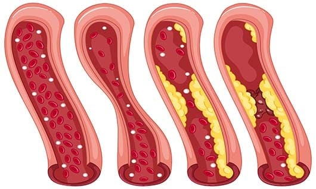

„Oczyszczają naczynia krwionośne, wzmacniają serce, łagodzą nadciśnienie”. Słynny kardiolog wymienił 2 produkty, które przedłużają żywotność do 100 lat
JULIA SMIERDZIŃSKA
Jak żyją stulatkowie i co jedzą w różnych częściach świata? Jak ciśnienie ma się do długowieczności? Światowej sławy amerykański kardiolog, profesor Yale Medical University, Dan Buettner, postawił 12 lat temu ambitny cel – zbadać stulatków z różnych części świata i odkryć sekret ich dobrego zdrowia. Efektem jego badań było stworzenie unikalnego środka, który w krótkim czasie może przywrócić zdrowie układu krążenia, wzmocnić serce i znormalizować ciśnienie krwi. Przeczytaj o tym w rozmowie.
- Dzień dobry, Dan! Czy poznałeś sekret stulatków? Czy jest coś, co ich wszystkich łączy?
- Tak, zrobiliśmy to i to jest niesamowite! Wyniki badań lekarskich wykazały, że wszystkim stulatkom, w wieku 100 i więcej lat, udało się zachować młodość serca i układu krążenia! Wyobraź sobie: nie wiedzą, co to jest nadciśnienie!
- A w tej chwili tylko w Polsce rośnie liczba pacjentów z nadciśnieniem i zgonów związanych z nadciśnieniem. Czemu?
- Wzrost zachorowalności wiąże się z niską jakością żywności, siedzącym trybem życia, przewlekłym stresem i wieloma innymi, z którymi borykamy się we współczesnym świecie. Jeszcze 25 lat temu świat był znacznie spokojniejszy, stabilniejszy, powietrze czystsze, a produkty bardziej naturalne. Wszystkie te czynniki prowadzą do zatykania naczyń krwionośnych, wzrostu ciśnienia, pogorszenia pracy serca. Ale 100-latkowie nie są oderwani od cywilizacji. Pracują równie ciężko, okresowo doświadczają stresu, nie gardzą fast foodami. Jednak ich serce i naczynia krwionośne są jak u 30-latków!
Profesor Dan Buettner podróżował po całym świecie w poszukiwaniu tajemnicy „wiecznej młodości” serca i naczyń krwionośnych
- To jest niesamowite! Jak oni to robią?
- W diecie stulatków jest co najmniej jeden składnik roślinny, który całkowicie dba o zdrowie serca i naczyń krwionośnych. Zidentyfikowaliśmy 2 z tych naturalnych produktów o najpotężniejszych korzyściach zdrowotnych:
- Głóg
- Pokrzywa
- Okazuje się, że najważniejsze jest zdrowe serce i naczynia krwionośne, stabilne ciśnienie. Ale w Polsce te owoce i rośliny są rzadkimi egzotycznymi, tutaj po prostu nie można ich uzyskać. Jak więc można je znaleźć?
- Od razu ci powiem - jest rozwiązanie. Faktem jest, że po otrzymaniu wszystkich tych danych i potwierdzeniu ich badaniami klinicznymi, zaczęliśmy opracowywać formułę opartą na mikroenzymach roślinnych uzyskanych z tych owoców i roślin. Za pomocą specjalnej opatentowanej technologii połączyliśmy je, a nawet zwiększyliśmy skuteczność złożonego działania. Ta formuła stanowiła podstawę środka, które nazwano „”.
W przeciwieństwie do konwencjonalnych leków na nadciśnienie, które sztucznie obniżają ciśnienie i powodują szereg poważnych powikłań, działa łagodnie, systematycznie zwiększając swoją skuteczność. Substancje aktywne w jego składzie przywracają funkcję naturalnej regulacji ciśnienia krwi.
Jak mówiłem, „” działa kompleksowo – szybko łagodzi objawy zewnętrzne (bóle głowy, zawroty głowy, szumy uszne), uruchamia procesy samoleczenia, poprawia pracę serca i drożność naczyń, chroni przed zakrzepami, udarami i zawałami.
Intensywne naturalne koncentraty w składzie „” usuwają złogi soli i cholesterolu ze ścian naczyń krwionośnych, przywracając naturalny przepływ krwi.
- I to jest świetna wiadomość! Powiedz nam gdzie i jak można kupić ?
- Nie jest sprzedawany w aptekach. Moi koledzy i ja świadomie podjęliśmy tę decyzję, teraz wyjaśnię dlaczego. Kompletny skład „” jest w domenie publicznej, ale formuła interakcji składników jest unikalna i opatentowana. Trzymamy je w ścisłej tajemnicy, aby uniknąć spekulacji ze strony firm farmaceutycznych i sieci aptecznych.
Dlatego sprzedawany jest za pośrednictwem oficjalnej strony producenta. I to bardzo dobrze działa. Po pierwsze, kupujący są chronieni przed podrabianiem. Po drugie, mogą kupić produkt bez marż i marż pośredników.
W tej chwili producent prowadzi wspaniałą akcję. Każdy mieszkaniec Polski może zamówić "" na oficjalnej stronie i zamówić go z promocją. Wystarczy umieścić aplikację na stronie, a ja oczywiście radziłbym się pospieszyć. Zasoby nie są nieograniczone, a pakietów w ramach promocji w tak przystępnej cenie jest coraz mniej.
Na koniec wywiadu życzę wszystkim długiego życia. Pamiętaj, wiele zależy od nas samych, od tego, jak bardzo dbamy o swoje zdrowie. Nie zapominajmy, że stan serca i naczyń krwionośnych ma ogromny wpływ na jakość i długość naszego życia. Nie tylko w Polsce, ale także w wielu innych krajach ludzie są pozbawieni możliwości regularnego spożywania pokarmów niezbędnych do stabilizacji ciśnienia krwi. Ale teraz istnieje rozwiązanie tego problemu, a jest nim .
Dodatkowo, tylko teraz przy zakupie całego zestawu, otrzymasz za
. Zdecydowaliśmy się na tę promocję, ponieważ zależy nam na
jak najbardziej efektywnych wynikach Twojej kuracji. Dzięki niej zyskasz
dodatkową możliwość dłuższego korzystania z rezultatów stosowania , a my
będziemy mieli pewność, że Twoje ciśnienie krwi jest pod stałą kontrolą najlepszego
specjalisty w tej sprawie, czyli środka .
PRODUCENT ZAPEWNIA DOSTAWĘ ZBLIŻENIOWĄ! PROCES PRZYJMOWANIA ZAMÓWIEŃ JEST TAK BEZPIECZNY, JAK TO TYLKO MOŻLIWE.
Komentarze
Aleksander Toskiej
Moje ciśnienie ciągle skacze... a ja nie rozumiem o co z nim chodzi. Wiem tylko, że po alkoholu wzrasta, ale zdarza się, jakby bez powodu... Myślę, że mam to dziedziczne, moja mama ma taką samą historię, jest na lekach. Lekarz też miał kontrolę, wszystko wydawało się być dobrze. Przepisano normodypinę i kardiomagnes. Przez tydzień stan się poprawił, ale potem wszystko poszło nie tak... Teraz biorę cardiomagnet na noc, ale po południu ciśnienie skacze od 136 do 150 i od 75 do 95 ... Zdałem sobie sprawę, że lekarze są tutaj bezsilni ... Właśnie zamówiłem , Chcę tego spróbować.
Olga Mickiewicz
Och , ! To bardzo dobry środek, polecam. Kupiłam całą kurację, bardziej na profilaktykę. Dlatego byłam mile zaskoczona, kiedy zaczęłam czuć się znacznie lepiej.
Anna Abramowicz
Aleksander, moja historia jest bardzo podobna do twojej. Przeszłam wszystkie badania, nic nie znalazłam. A potem jakoś przyszłam zrobić szczepienie, terapeuta zmierzył moje ciśnienie i było 150 do 110 !!! Normalnie szok))) Wyznaczył mi concor i lopaz. Teraz akceptuję tylko concor, ale to absolutna bzdura, nicherta nie pomaga! I właśnie przeczytałam o , napisałam do koleżanki, ona jest lekarzem. Chcę usłyszeć, co ma do powiedzenia. Jeśli wyrazi zgodę, zamówię również na próbę. Te kapsułki mają wiele dobrych recenzji.
Krystyna Niemejko
Lekka aktywność, wieczorny spacer, spokojny bieg, dosłownie pół godziny. Odmówiłam przyjęcia leku, chociaż mi też coś przepisano, nie pamiętam. To cała gałąź przemysłu farmaceutycznego i bardzo, bardzo bogata. Zaczynasz na chwilę od pigułek, a potem bierzesz je przez całe życie. Dlatego zamówiłam , kompozycja jest fajna. Rano przyszła dostawa, bardzo się cieszę) Zamówiłam ją na tej samej stronie. Wszystko dotarło na czas, opakowanie jest nienaruszone, starannie zapieczętowane.
Katarzyna Zielonkiewicz
Ludzie, wysokie ciśnienie to bardzo poważny problem !!! Oświadczam to z całą odpowiedzialnością lekarza. Niech to nie będzie mój profil, ale wszystkich lekarzy, z którymi się komunikuję się z kolegami, jest tyle smutnych historii... Jeśli przez dłuższy czas lekceważysz objawy, a miażdżyca się często zdarza, a to jest ryzyko pęknięcia miażdżycy. I wszyscy doskonale wiemy, jak kończy się ta historia. Dlatego namawiam, jeśli ciśnienie jest wysokie, to nie jest norma, trzeba coś z tym zrobić. Co do a, to znowu jako lekarz mogę powiedzieć, że skład jest bardzo zachęcający. Moim zdaniem słyszałam już o tych kapsułkach, są omawiane w zagranicznym środowisku medycznym, są bardzo chwalone. Na razie z własnego doświadczenia nie mogę nic o nich powiedzieć, ale zamówiłam już, zobaczymy.
Natalia Kowalczuk
Nonsens…
Wawrzyn Rymkiewicz
wziąłem concor, jest bezużyteczny. Najpierw pomagał, potem po prostu zostałem bez efektu. Tylko faktycznie działa. Moja żona załatwiła go swoimi kanałami, jest lekarzem. Po tygodniu lub dwóch poczułem się młody, energiczny i pełen sił)))) Póki stan trzyma, kompletny porządek, ale nie przegapię okazji, aby zamówić więcej
Grażyna Aleksiejuk
Boże, ludzie, Concor to żywe piekło! Mnie też to zostało przepisane. Na początku wszystko było dobrze, potem jest do bani! Ma tam ogromną liczbę skutków ubocznych, prawie do ślepoty. Wciąż stopniowo go przestawałam brać, lekarz ostrzegł, że może dojść do luzu. Horror... Nawet taka myśl się pojawiła, 100 g brandy na noc. Ale bałam się, zwłaszcza że mało piję. Potem na jednym forum napisałam do kobiety, opowiedziała mi o , podała link gdzie zamówić. Wtedy oczywiście nie było tak opłacalnej akcji, ale nie żałowałam! Po pierwsze skład jest naturalny i bezpieczny, w ogóle nie ma chemii. Po drugie, to działa! To naprawdę działa i pomaga. Stan całkowicie się poprawił, a ciśnienie jest nadal stabilne. Więc to dobry środek, polecam go.
Zenon Bartkiewicz
Grażyna, mój dziadek, który ma nadciśnienie, otrzymał od lekarza radę, aby zawsze nosił ze sobą butelkę koniaku. I tylko trochę. A to z całą powagą, bez żartów ...
Dawid Łopatkiewicz
Ciśnienie mojej żony skacze od około pięciu lat, była bardzo udręczona. Brała statyny, ale są szkodliwe, mocno uderzają w wątrobę. Na szczęście udało nam się zdążyć. Znaleźliśmy gdzies , moja żona przeszła całą kurację i teraz czuje się znacznie lepiej. A najważniejsze jest to, że nie ma skutków ubocznych, żadnych złych skutków dla organizmu! Migreny całkowicie zniknęły, szum w uszach też, teraz śpi jak dziecko.
Izabela Kopania
W Europie te tabletki, które są nam przepisywane, już dawno zostały porzucone. Są zbyt silne i powodują uporczywe uzależnienie, będziesz musiał je brać przez całe życie, a to jest zrujnowane zdrowie. Skutki uboczne są okropne, herbata i kawa nie są dozwolone, mnóstwo wszystkiego jeszcze nie jest dozwolone ... Jestem wszystkimi rękami i nogami dla a i tym podobnych. Za granicą już dawno zastąpiono te syntetyczne pigułki. I są o wiele bardziej skuteczny niż ta chymoza. Wiem, o czym mówię, z własnego przykładu. mi pomógł. I radzę też więcej się ruszać. A wtedy nie będzie problemów z ciśnieniem.
Michał Orłowski
Cierpiałem na nadciśnienie przez ponad 10 lat. Dawno temu usunięto nerkę, po czym zaczęły się okropne bóle głowy. I tak, zawsze byłem za zdrowym stylem życia, nigdy nie paliłem ani nie piłem, tylko na wakacjach. A nie tak dawno moja żona też zamówiła a. Spędziłem czas na braniu tabletek i było mi lżej. Na początku byłem nieufny, ale faktem jest - środek działa.
Maria Jasiuk
Przyszło zamówienie, dziękuję bardzo. Wszystko w porządku, żadnych skarg. Jeszcze go nie wzięłam, więc nie mogę się wypowiadać ze względu na efekt. Ale usługa jest na topie, dobra robota, tak trzymaj.
Zofia Kopniak
Mam 54 lata, ostatnie 20 lat, ciśnienie wynosi 140 do 90. Kilka razy musiałam wezwać karetkę, kiedy wzrosła do 180/120. Mam konkretną diagnozę - nadciśnienie II stopnia. Wzięłam Prestarium, kompletny nonsens. Po nim natychmiast przerzuciłam się na a i dopiero wtedy odetchnęłam z ulgą. Minęło kilka miesięcy, a moje ciśnienie krwi jest w normie. Mam nadzieję, że tak będzie dalej.
Janina Michalska
Mój dziadek miał tętniaka aorty z powodu nadciśnienia, tak powiedział lekarz. Dzięki Bogu przeżył, ale mówią, że to wielkie szczęście. Więc to są poważne rzeczy.
PRZEJDŹ DO STRONY PRODUCENTA